These two agent packs contains several agents providing monitoring services for the MadKit kernels and for the distributed mode.
The system plugin includes the following agents:
-
GroupLister. A simple agent which just continuously lists known group on the platform.
-
AgentLister. This agents lists active, registered agents on the local kernel.
-
MessageTracer. This agent intercepts and displays any message transiting through the local kernel.
-
OrganizationTracer. This agent intercepts and displays any action made on the group and role tables in the local kernel.
-
GroupObserver. An agent which shows the complete organization (groups, roles and communities) of MadKit plus the messages transiting through the local kernel and the social actions that a local kernel is aware of).
-
SequenceDiagramAgent. An agent which graphically displays the messages within a group or a community.
-
EditorAgent. An agent that can be used as a note pad, and which sends
StringMessagesto other agents, with a powerful user interface -
WebBrowserAgent. An agent that displays .html pages and which may be controlled by messages.
-
MonitorAgent. An agent which gives some information about the Java virtual machine. You may also asks directly for a garbage collection.
The GroupObserver agent is the main tool to get information about the MadKit organization, about the transmitted messages and about social actions. Modifications of the display are automatically taken into account when an agent either creates a group/community, joins/leaves a group/community, requests/leaves a role in a group, or sends/broadcasts a message.
The GroupObserver agent is made of two panes: the top pane displays the organization in a tree-like structure, while the bottom pane shows the messages and actions that the current agent is aware of. The following figure shows a GroupObserver:
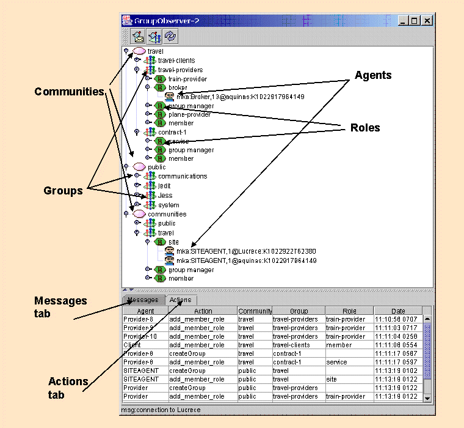
An organization is represented as a tree: communities are at the top level, then groups, then roles. Agents are at the bottom level. Right clicking on elements of the trees will bring a popup menu: for the moment, only groups have a popup menu, which allows for the tracing of messages of just one group, or of all the groups. By default, the message panel shows the messages of all groups.
Click on the Messages tab to get a view of all messages that are sent by agents. If the "trace messages of only one group" option is set, then only the messages of the group are displayed. The following messages field are displayed: sender, receiver, message class, content, date.
Note: only messages of which this kernel is aware are displayed. A kernel is aware of all messages that are done locally and all messages of which either the sender or the receiver is located in this kernel. Thus a message concerning two agents located in remote kernels are not displayed with this tool.
Click on the Actions tab to get a view of all organizational actions that your local kernel is aware. The following actions attributes are displayed: agent (the source of the action), action (the type of the action), community (the community in which the action is performed), group (the group concerned by this action), role (the role concerned by this action if any), date (the time at which this action happened).
Note: organizational actions are automatically forwarded to all kernels that are connected. A local kernel is then aware of all organizational actions that happens in all communities to which this kernel through its SiteAgent is connected. If a kernel is not connected to a community, then the corresponding actions that takes place inside this community are not displayed.
-
Clear messages. Clear all messages from the message tab.
-
Clear actions. Clear all actions from the actions tab.
- Show messages: activate or deactivate the display of messages. By default, this option is deactivated in order to reduce the time and space taken.
-
Refresh. Actualize the organization tree, and get a "fresh" organization representation. Click on it if you suspect that the GroupObserver has not updated a modification of the organization. This should not be necessary, due to the wonderful quality of the code ;-)
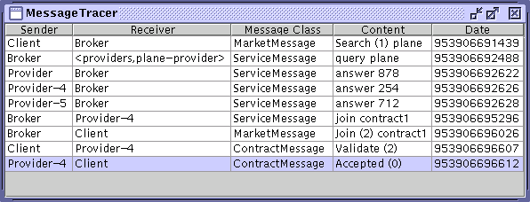
This agent intercepts the sendMessage() calls in the kernel and displays them in a table.Displayed information is:
-
The sender identification. If it is a local agent, the "agent name" will be used, and the AgentAddress otherwise
-
The receiver identification. If the message was sent through a sendMessage call, the tracer will use the agent name or address as above. If the message was sent through a broadcastMessage()call, it will display the parameters as <group,role>
-
The message class name
-
The message content. This information is only available if the developer defined a toString() method in its message class
-
The time, represented as the number of milliseconds since January 1, 1970, 00:00:00 GMT.
Note
The MessageTracer agent has been replaced by the GroupObserver.
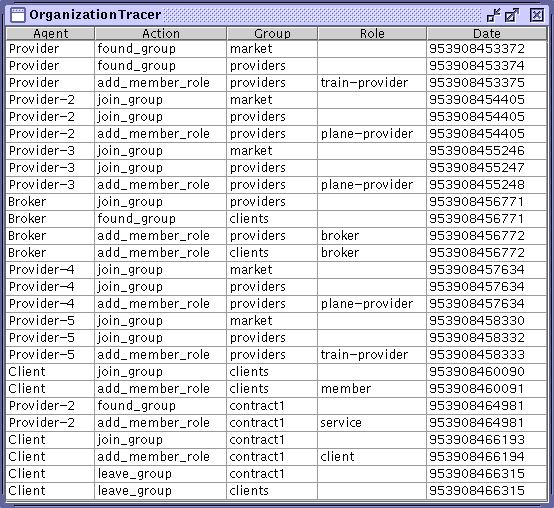
This agent requests hooks on every organization-related calls. This covers: joinGroup(), foundGroup(), requestRole(), leaveRole(), leaveGroup()
Displayed information is:
-
The sender identification. If it is a local agent, the "agent name" will be used, and the AgentAddress otherwise
-
The triggered hook
-
The group parameter
-
The role parameter, if applicable
-
The time, represented as the number of milliseconds since January 1, 1970, 00:00:00 GMT.
Note
The OrganizationTracer agent has been replaced by the GroupObserver.
The WebBrowser agent is a simple agent which displays .html pages. Apart from being a simple browser, this agent may be controlled by messages to display the page of a specific URL. The main purpose of this agent is to display the documentation of MadKit.
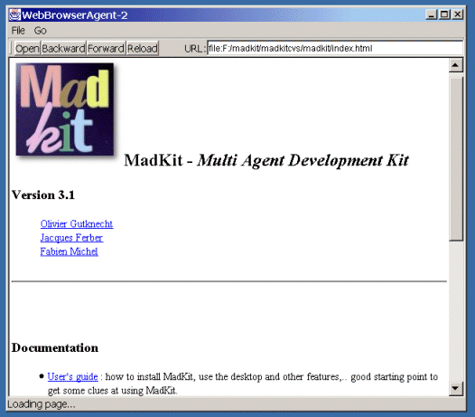
Use this agent as you would do with any we browser.
Note: this browser is VERY simple. You have to type the whole URL. Some pages may not be correctly displayed. because, this agent use the JTextEditor of Sun's class libraries which does not implement the whole .html standard.
You may ask this agent to display a specific .html page by sending it a well formatted URL with a StringMessage.
For instance if there is a browser agent with role browser in group myGroup, then the following code:
AgentAddress ag = getAgentWithRole("myGroup", "browser");
sendMessage(ag, new StringMessage("http://www.madkit.org"));
|
will display the page of URL www.madkit.org in the browser agent.
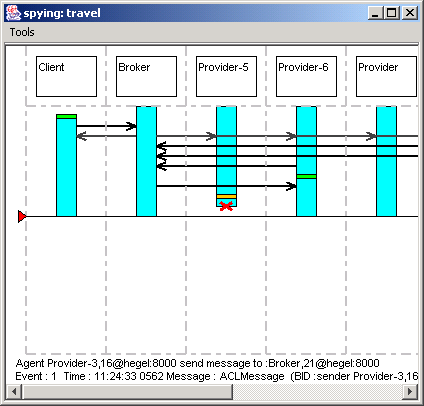
This agent intercepts the sendMessage() calls in the kernel and displays them in a table.This agent is fired through the GroupObserver agent. In a GroupObserver agent, right click on a community or on a group icon, and select the 'sequence diagram' menu item.
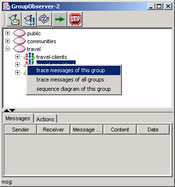
Note: we have noticed a little bug of the displayed information when agents are not on the same kernel and are connected through NetCom or the Communicator. This will be fixed soon...
The Editor agent, also called the NotePad Agent is a
simple editor application which can send the content of its buffer to
other agents using StringMessage messages.
NotePad can be used for a variety of purposes: as a companion editor for language agents, as a simple "chat" agent to communicate with others, etc...
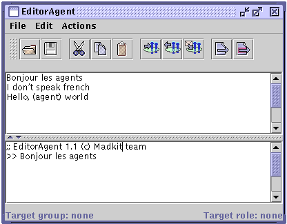
The NotepadAgent GUI contains two editing areas. The top one is used to edit text. The second one is used to display the texts sent or received via messages. An editor can join a group and plays a role interactively. It can also select a role within a group as the target, to broadcast messages to all agents that play that role. When the user push the button or select the menu item 'send selection' (or send buffer) the content of the selected text of the top editing area (or the whole text) is sent to all the connected agents.
Note: A NotePad agent does not receive its own messages even if it is a member of a targetted group/role.
Most commands can be activated through the menu or the toolbar interfaceFile MMenu
-
Load. Open a file in the top editing area.
-
Save. Save the content of the top editing area into a text file. If there is no file selected, this command opens a dialog box.
-
Save as. Opens a dialog box to save the content of the top editing area into a text file.Save
-
Cut the selected text and copy it to the clipboard.
-
Copy. Copy the selected text to the clipboard.
-
Paste. Paste the content of the clipboard.
-
Delete. Delete the selected text.
-
Clear output. Delete the content of the bottom editing area.
Note
All cut, copy, and paste operations, when activated from the menu or the toolbar, are performed on the top editing area. But the keyboard shortcuts (ctrl-x, ctrl-c and ctrl-v) works on both editing areas.
-
 Join Group.
Opens a dialog box where the user can enter a name of a group
and a role. You may either select an already created group or
role, or type a new group name to create a group.
Join Group.
Opens a dialog box where the user can enter a name of a group
and a role. You may either select an already created group or
role, or type a new group name to create a group.
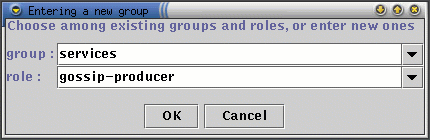
If accepted (for the moment, we assume that it is always accepted) the agent join the group and plays the role. If the group or the role within the group does not exist, the group and role are created. This can be used to interactively create a group. -
 Leave Role.
Opens a dialog box where the user can leave a role the editor
agent previously handled.
Leave Role.
Opens a dialog box where the user can leave a role the editor
agent previously handled. -
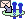 Set Target. Opens a dialog box where the user selects the group and roles that will receive its messages. Only the groups already joined by the AgentEditor appear in the groups list.
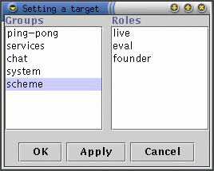
-
 Send selection. Sends
the selected text to the connected agents.
Send selection. Sends
the selected text to the connected agents. -
Send buffer. Sends the whole text of the top editing area to the target agents
To make a chat between several distributed users is quite easy with EditorAgent. Each user launches its own EditorAgent and joins a predefined group (e.g. "ChatGroup") with a role corresponding to a discussion topic. Then select as target the joined group and role. Then, all users listening to the same topic (i.e. playing the same role) will receive the messages of all the others.
The following picture shows two agents engaged into a chat. They are members of the group 'chat' and plays the role 'boring_topic'. This group and this role are set as targets for the messages.
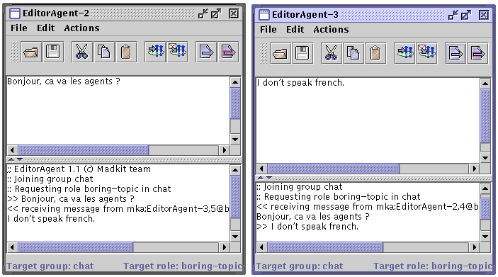
It is possible to use EditorAgent as a front end editor for language oriented agents, i.e. agents that evaluate expressions and return results.
For instance, the following picture shows a connection between and EditorAgent and a MiniSchemeEval agent (which can be found in the scheme directory). The latter is a simple scheme evaluator which receives StringMessage and evaluates its content.
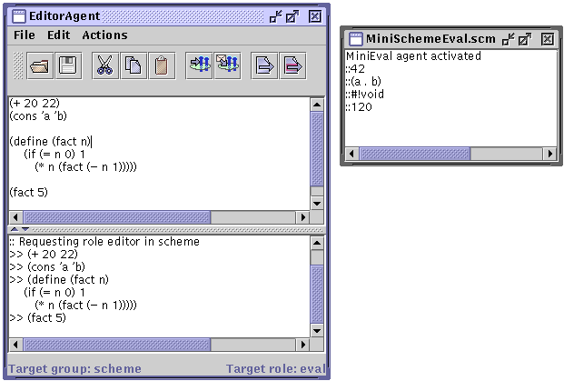
EditorAgent has just to join the group "scheme" with the role "eval", where the MiniSchemeEval agent is already present. Then, the expressions in the top editing panel are evaluated by the miniEval agent. Of course, the two agents can physically resides in two different sites.